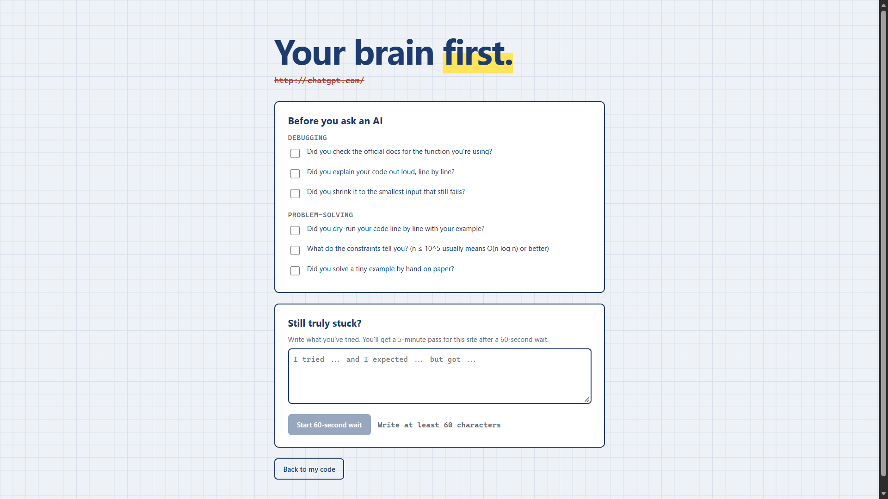
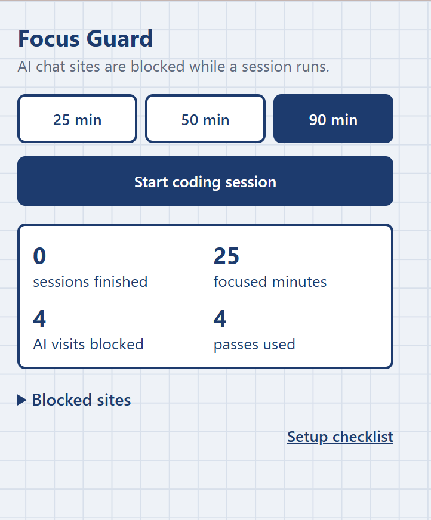
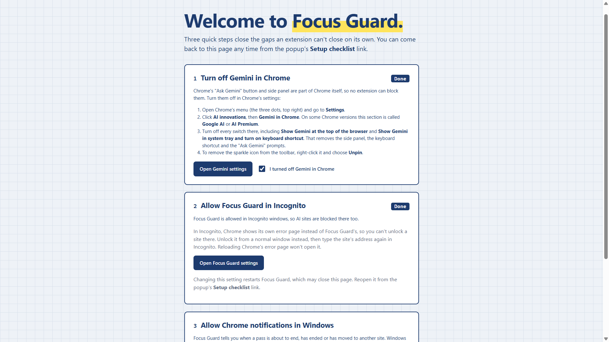

Your brain first.
Focus Guard is a free browser extension for Chrome and Edge that blocks AI chat sites while you code, so you try solving the problem yourself first.
Free and open source. Works in Google Chrome and Microsoft Edge. The download is always the newest version.
Why I built this
Recently, whenever I sat down to solve problems on LeetCode, CodeChef, or HackerRank, my hand would automatically move toward ChatGPT or Gemini. Instead of thinking through the problem, I'd paste it in, copy the answer, and submit. That's plagiarism, and worse, I wasn't actually learning anything.
I built Focus Guard to break that habit. It doesn't ban AI completely. It just adds enough friction that I have to try solving the problem myself first. If I'm genuinely stuck after really trying, I can still get help, but only after writing down what I've attempted.
How it works
1. Start a session
Pick 25, 50 or 90 minutes from the toolbar. While the timer runs, AI chat sites like ChatGPT, Gemini, Claude and Copilot are blocked. The toolbar shows the minutes left.
2. Try it yourself
Open an AI site and you get 6 questions to try first: 3 for debugging and 3 for problem-solving, like "What changed since it last worked?" They're different each time.
3. Still stuck? Earn a pass
Write what you tried, wait 60 seconds, and get 5 minutes on that one site. Every other AI site stays blocked. Outside a session, everything works normally.
See it in action



What's included
Blocks 25 AI chat sites
ChatGPT, Gemini, Claude, Microsoft Copilot, Perplexity, DeepSeek and more, including their subdomains. Add or remove sites yourself; the list is locked during a session.
One site at a time
A pass unlocks only the site you were stuck on. Notifications tell you one minute before it ends, when it ends, and if it moves to another site.
Simple stats
Sessions finished, focused minutes, AI visits blocked and passes used, right in the popup.
Private by design
No accounts, servers, ads or tracking. Everything stays in your browser. Read the privacy policy.
Some AI tools are out of any extension's reach, like the AI built into Chrome and Edge. The known limitations explain what isn't blocked and how to turn those off yourself.